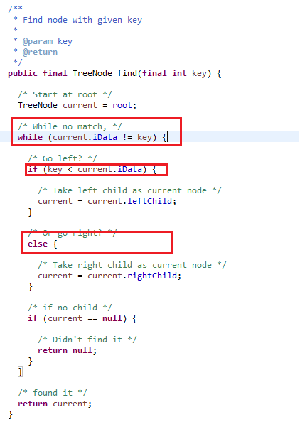
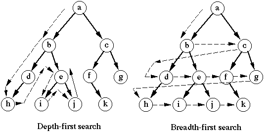
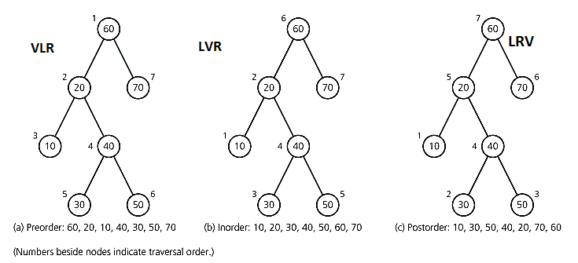
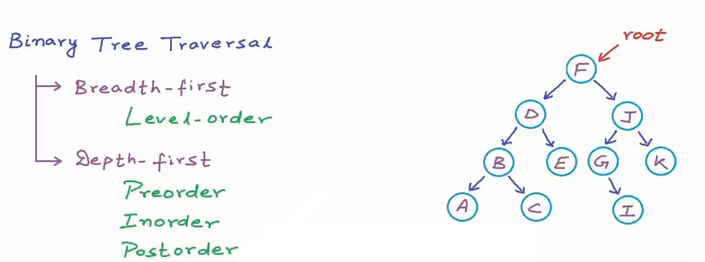
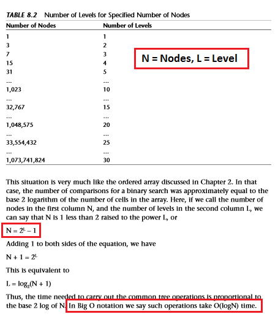

- BST:= Benefits of Ordered Array + Linked List
- BST:= Faster Insert/Delete like Linked List
- BST:= Faster Search like Ordered Array
- BST:= Nodes connnected by Edges
- BST:= An instance of more general category like Graph
- Binary Search in an Ordered Array takes O(Log n)
- Insert/Delete in Ordered Array takes O(n)
- Insert/Delete in Linked List takes O(1)
- Search in Linked List takes O(n)

- Insert: Lower value at Left side and Higher value at Right side
- Traversal:= Breadth First (Level Order) and Depth First (PreOrder, InOrder, PostOrder)
- Difference in Breadth First (Level Order) and Depth First:= 
- Depth First types:= Preorder-VLR, Inorder-LVR, Postorder-LRV (VELLORE LIVER LARVA)


- Last element in the Postorder traversal is the root of tree
- N = 2^L - 1 where N = Number of Nodes and L = Level of Tree

- Binary Search

|